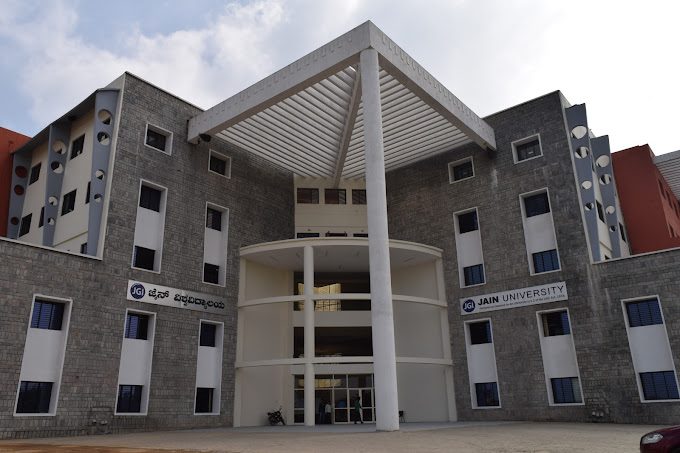
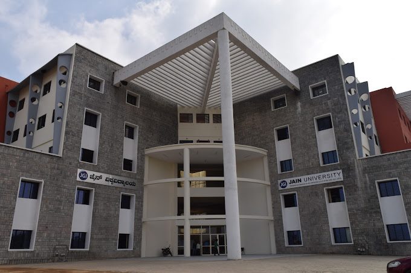
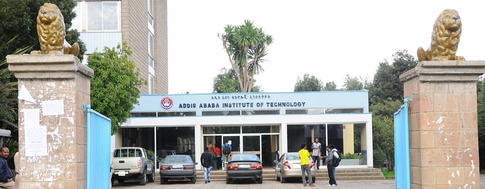
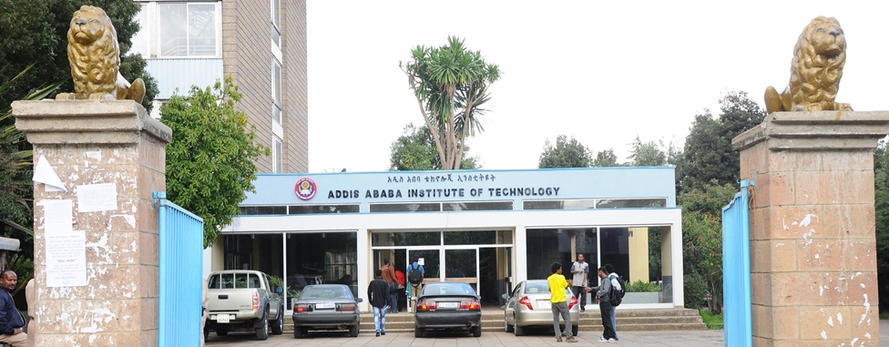

My Education
Master of Engineering in Embedded Systems, Jain University, Bangalore, India | 2019-2021
Pursued a rigorous academic program focused on the design, development, and implementation of embedded systems, in other words the unified engineering of both hardware and software. It deals with real-time systems, and device drivers. Acquired a comprehensive understanding of microcontrollers, digital signal processors, and operating systems. Gained hands-on experience in utilizing tools like Keil, MATLAB, and Simulink for system simulation and analysis. Gained proficiency in industry-standard tools and methodologies. Developed a strong foundation in embedded systems, honing skills in:
- Microcontroller programming (Arduino, Raspberry Pi)
- Real-time operating systems (RTOS)
- Sensor interfacing and data acquisition
- Wireless communication protocols (Bluetooth, Wi-Fi)
Jain University
Electronics and Communications Engineering Department
Faculty of Engineering
https://set.jainuniversity.ac.in/ 

Bacheleor of Science in Electrical Engineering, Addis Ababa University, Ethiopia| 1994-1999
The university is the oldest and the best university in Ethiopia. The 186 credit hours of Engineering program included a robust foundation in both fundamental sciences and specialized electrical engineering disciplines. The initial years focused on core sciences and foundational engineering concepts. Early engineering specific courses included Fundamentals of Circuit, Probability and Statistics, and Electrical Engineering Lab and Workshop Practice. Later specialized Electrical Engineering subjects. Key areas of study included:
- Electromagnetics (2 semesters)
- Electrical Machines and Drives
- Electronics & Electronic Devices
- Digital Electronics & Logic Design
- Signals, Systems & Networks
- Power Systems (2 semesters)
- Control Systems (2 semesters)
- Communication Systems (2 semesters)
- Introduction to Computers, Computer Programming, Introduction to Computational Methods
- Instrumentation and Computing: Engineering Instrumentation
Addis Ababa University
Department of Electrical and Computer Engineering
Addis Ababa Institute of Technology
https://www.aau.edu.et/aait/ 

My Work Experience
I have more than 21 years of experience in telecommunications, power systems, and e-government solutions. Specialized in digital solutions, spectrum monitoring, and system design. Strong background in managing complex technical projects, regulatory standards, and international collaboration. Skilled in cross-disciplinary research with a focus on telecommunications, energy systems, and digital transformation. Some of my specific roles are
- More than 7 years as e-Government Technology Specialist which involved the selection and evaluation of technologies for e-Government infrastructure (data center) and software applications (services and SaaS) and the design of e-Gov architecture and strategy of Ethiopia
- For more than 5 years I was a Senior Standards and Regulation Expert responsible for spectrum management, type approval, and standards formulation of the Ethiopian telecom and IT sector
- More than 3 years as Senior Standards and Regulatory Expert in the Ethiopian Telecom Regulator which involved the management of spectrum, quality approval of devices and the formulation and review of standards
- Management of electrical subcontract in the construction of an international airport terminal in Ethiopia
I started my career as a junior Engineer at the Ethiopian electric power company EELPA/EPCO.
Technical Expertise
Comprehensive skill set spanning hardware, software, telecommunications, and policy development
Embedded Systems
Real-time systems, microcontroller programming, and IoT device development with hands-on experience in Arduino and Raspberry Pi platforms.
Telecommunications
Deep expertise in spectrum management, type approval, regulatory standards, and next-generation networks including 5G and CV2X communications.
e-Government & Digital
Strategic technology specialist for national digital infrastructure, data center architecture, SaaS evaluation, and digital transformation policy.
Power Systems
Foundation in electrical engineering with practical experience in power system management and large-scale infrastructure projects.
My Professional & Research Interests
My current professional and research interests are based on my academic history and extensive professional experience in the Telecommunication, IT, Power and Construction Industry. Thus, I have strong interest in the areas of Embedded Systems, IoT, AI and digital transformation. I closely follow developments in next generation telecom developments including 5G and 6G, DevOps, latest software development paradigms, technology ecosystems. The other area of my interest is in the application of digital technology for development particularly sustainable development including strategic and policy challenges in these area.